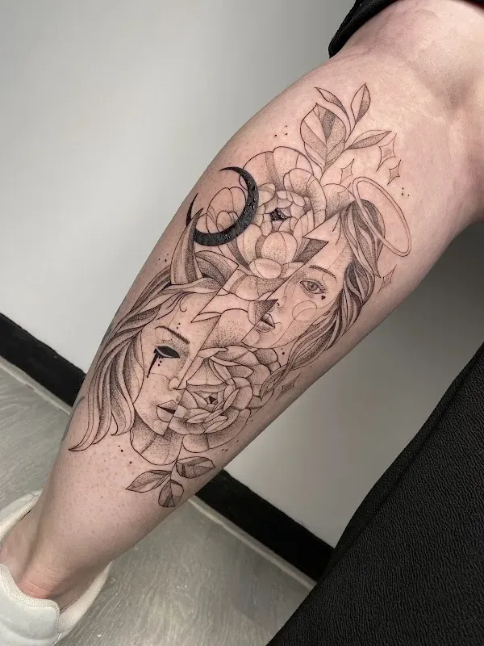
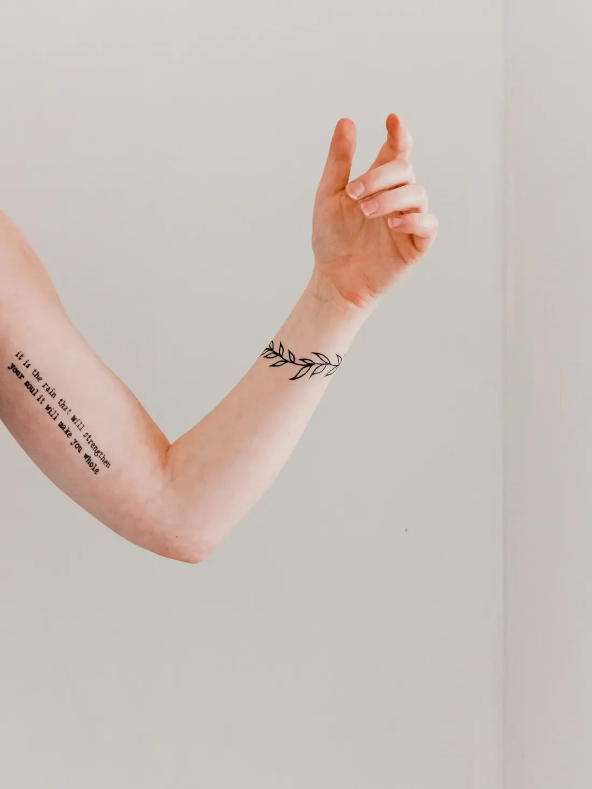
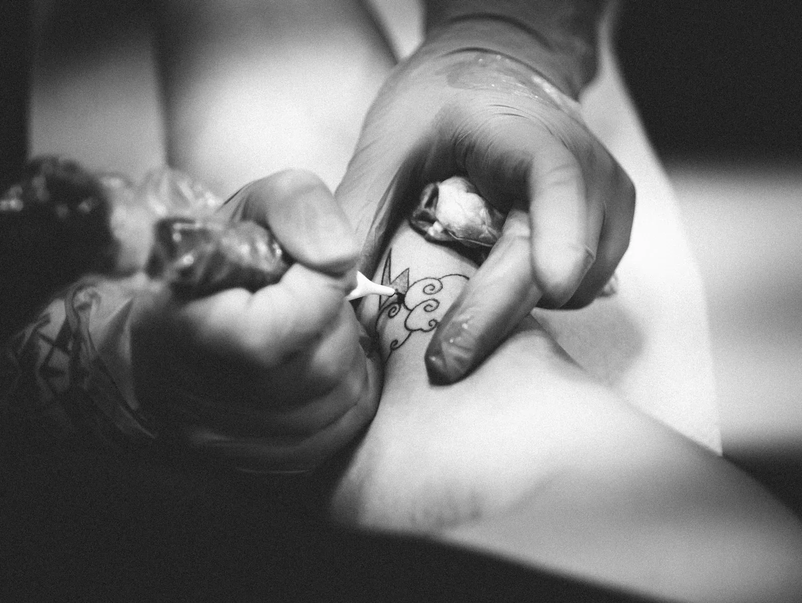

Een tattoo die alleen van jou is.
Unieke tattoo's, getekend op maat van de klant. Van je eerste idee tot een ontwerp waar je echt blij van wordt, met persoonlijke begeleiding en in een rustige sfeer.


Rustig, eerlijk en met oog voor detail
Een tattoo draag je de rest van je leven. Daarom krijg je hier geen ontwerp uit een map, maar een tekening die samen met jou groeit. Je mag meekijken, bijsturen en twijfelen. Pas als het voelt zoals het moet, gaan we zetten.
Van idee tot tattoo
Geen ingewikkelde stappen. Gewoon praten, tekenen en zetten, op jouw tempo.
Vertel je idee
Stuur een berichtje met wat je in gedachten hebt. Een paar foto's, een woord, een herinnering: alles helpt om je idee te begrijpen.
We tekenen samen
Je idee wordt omgezet in een ontwerp dat bij jou en bij die plek op je lichaam past. Iets aanpassen kan altijd.
De dag zelf
Zenuwachtig? Heel normaal. Je wordt meteen op je gemak gezet, en achteraf weet je precies hoe je je tattoo verzorgt.


Fijne lijnen, zachte schaduwen
Bloemen, gezichten, kleine symbolen of een groter stuk dat over je kuit loopt. Elk ontwerp wordt voor één persoon getekend, en dat zie je.
Wat klanten zeggen
★★★★★“Giga aanrader. Professioneel, heel straf in haar job, en superleuke ervaring met vrolijke babbels. Saltje weet wat ze doet, zowel op professioneel als op menselijk vlak.”
Julie Callaert
★★★★★“Ik ben een ganse week enorm zenuwachtig geweest, maar vanaf het moment dat ik de deur binnenstapte viel er meteen een stuk stress van mij af. Hier zijn ze super vriendelijk en spontaan en stellen je meteen op u gemak.”
Elien Schroyen
★★★★★“Heel blij met mijn tattoo. Super duidelijke fine line! Heel vriendelijke mensen. TOP ervaring!”
Carmen Noten
★★★★★“Meerdere keren al geweest, en ik zal blijven gaan, niet alleen een top tatoeur maar ook een super toffe madam!”
Kimberly Creemers
★★★★★“Ik heb vandaag hier mijn Tattoo laten herstellen/ bijwerken en ik ben er super tevreden over. Het zijn professionele mensen die je een welkom gevoel geven en ze weten wat ze doen.”
Jan-Willem
Zin om te beginnen?
Stuur een berichtje via WhatsApp of bel even. Samen zoeken we een moment om je idee te bespreken.
- Betalen gebeurt contant. Handig om op voorhand even te weten.
- De ingang is rolstoeltoegankelijk en er is een aangepaste parkeerplaats.
- Iedereen is welkom, gewoon zoals je bent.
Openingsuren
- Maandaggesloten
- Dinsdag10u tot 17u
- Woensdag10u tot 17u
- Donderdag10u tot 17u
- Vrijdag10u tot 17u
- Zaterdag10u tot 17u
- Zondaggesloten